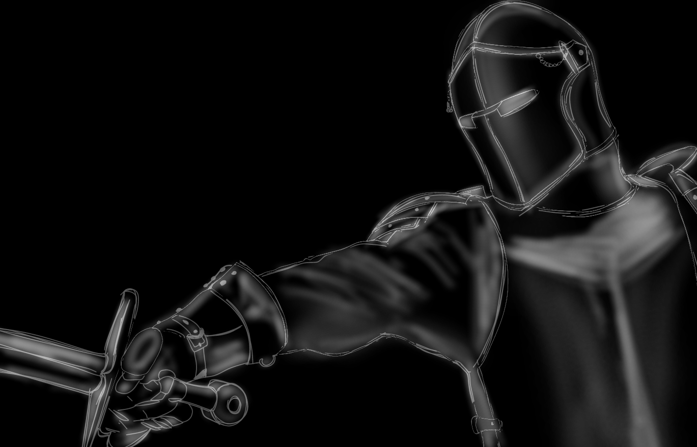

Caiden Frary

My name is Caiden Frary I am a BA Media Production student at Nottingham Trent University and I specialise in cinematography.
My motivation to create stems from my passion for visually pleasing content, this is why I push myself to create challenging
productions. There are many themes I am well versed in such as corporate videography, film cinematography, promotional videos and
photos, music video production and educational videos.
My final project reflects my skills and creativity. Choosing to make a medieval styled period film pushed my technical and practical
skills.
I hope my work can inspire others and show that even on a small budget you can achieve visually stunning content through dedication
and a love for the project you work on.

 @rollthetapess
@rollthetapess
 @roll.the.tapes26
@roll.the.tapes26